A series in four movements · 触风系列 · 2026
Wind cannot be seen; only what it touches can. Touch Wind is a series of four interactive fields in which the same wind is given four different materials to speak through: feather, fire, grass and wave. The visitor's hand is the wind; the movements differ only in how the material answers.
Beneath all four movements runs a single unchanging system: thousands of particles, a slow Perlin current, and a hand whose velocity is injected into the field through a Gaussian distribution, so that most particles obey the gesture while a few rebel and fly wide. What changes from movement to movement is the temperament of the matter. Feather flies at the lightest breath, scattering bright and settling slow; fire fills the frame edge to edge, rolling and rising in red, orange and yellow, and answers the hand with bursts of sparks; grass is rooted, bowing and springing back rather than flying away; the wave is a single breathing swell of powder that surges, breaks and reforms, drifting across the frame and healing behind every touch. In every movement the material covers the whole screen and never drains away: the frame stays full, and the visitor interacts with a living surface rather than watching one empty. Touching the same wind, the visitor receives four different answers, and the series becomes a study of how material character, not the force applied to it, decides what a touch means.
The work belongs to a tradition of gestural systems explored by artists such as Zach Lieberman and studios such as teamLab, in which the artwork is not an image but a set of rules, completed only by the audience.
All four movements run on the same four components; each movement re-tunes them. Fire adds a strong updraft and recycles every ember from the top of the frame back to the base, so the blaze can never empty; grass anchors every particle to a root; the wave is a powder of twenty-six thousand one-pixel grains, breathing and drifting as one body; and every material covers the frame at rest and refills after every storm.
Two to six thousand particles depending on the movement, each a position and a velocity, redrawn sixty times per second. Fading trails are produced by veiling each frame with a translucent layer rather than erasing it.
A noise field assigns every point in space a smoothly varying direction, giving the resting state its slow, coherent currents. A third noise dimension moves the whole field through time.
The pointer's velocity is injected into nearby particles. Strength decays as a Gaussian bell of distance; direction and magnitude are individually perturbed by Gaussian noise, producing the splatter.
Colour is mapped to speed: still air renders as deep blue, agitated air as warm white. The gesture literally illuminates its own path, then fades as drag returns the field to rest.
One wind, four materials, all playable side by side: the field at the top of this page switches between every movement through the mode bar. Every movement is additionally realised as a full installation version with camera hand tracking and its own synthesised sound: the fire roars and crackles, the meadow rustles with evening crickets, and the wave inhales and exhales as a breathing tide that drifts with the powder. Each movement also exists as high-resolution studies rendered offline by the same engine.
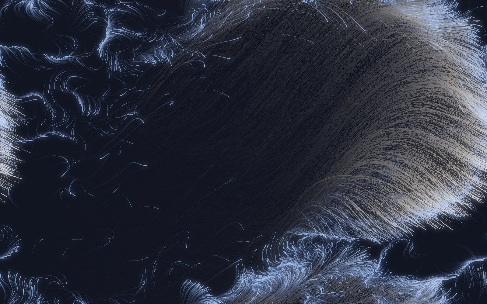
Wind as feather. Six thousand luminous particles rise at the lightest breath: most follow the gesture while a Gaussian minority scatters wide, and every sweep combs the field into long feathered barbs, as if a plume had been drawn through ink and light. Colour is bound to speed. At rest each grain holds a deep periwinkle blue, close to the ink-dark ground; as the hand accelerates it warms through pale steel to an almost warm white at the crest of a gust, so that brightness reads directly as energy and the down settles back into blue once the air stills. The palette is deliberately narrow, a single cool blue lifted only by the white of motion, so the eye follows the gesture rather than the colour. The movement grows from the gestural ink-and-light studies of Zach Lieberman, in which a mark is the trace of a hand in time, and from the audience-completed fields of teamLab, where the work is a set of rules finished only by whoever touches it. Its animating idea is lightness: a material that answers the smallest force and forgets it slowly.
How to playMove the hand or mouse to raise wind; pinch two fingers and a gust sweeps in the direction of the movement; with sound on, the wind howls with the gesture, and a synthesised forest returns in the calm.
Experience Feather ↑ Installation version — sound + camera hand tracking ↗
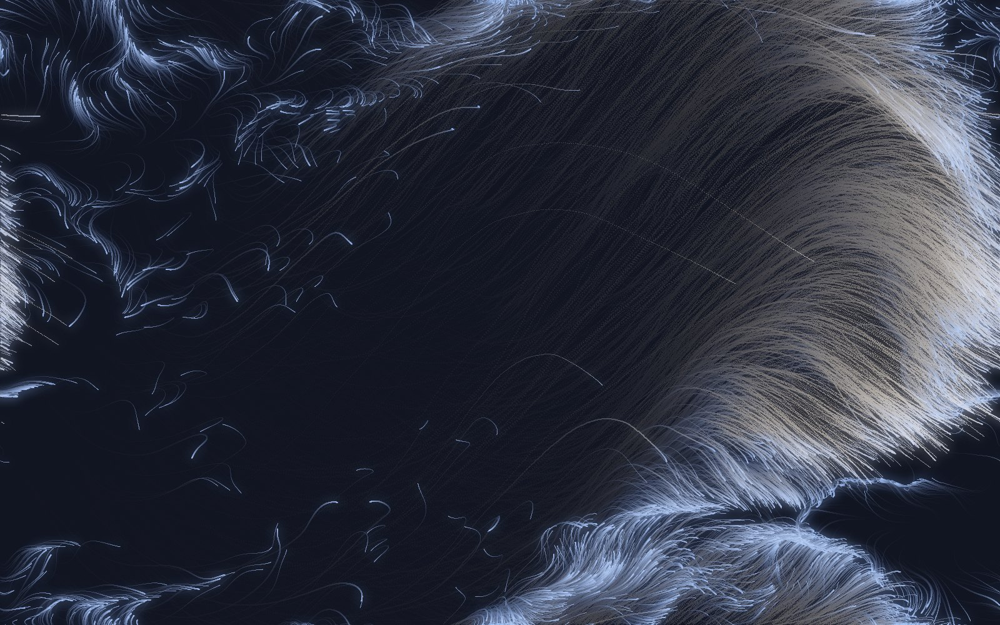
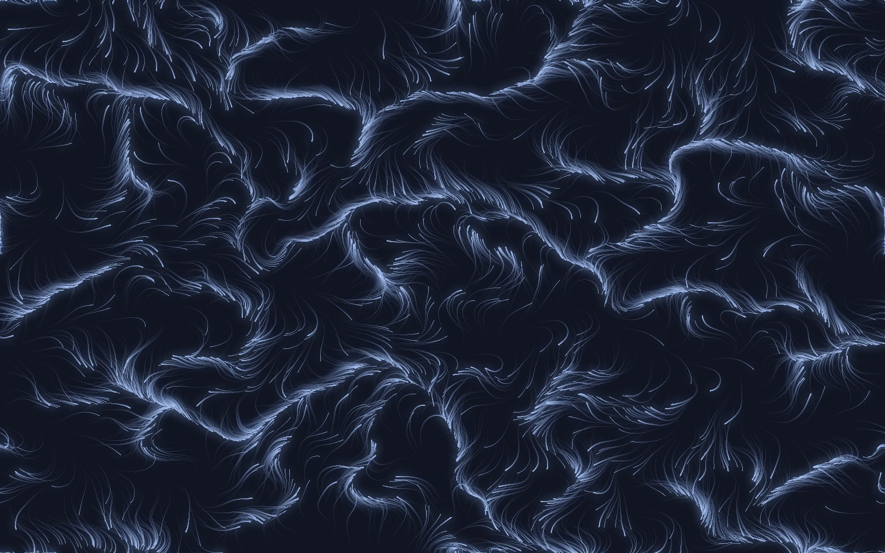
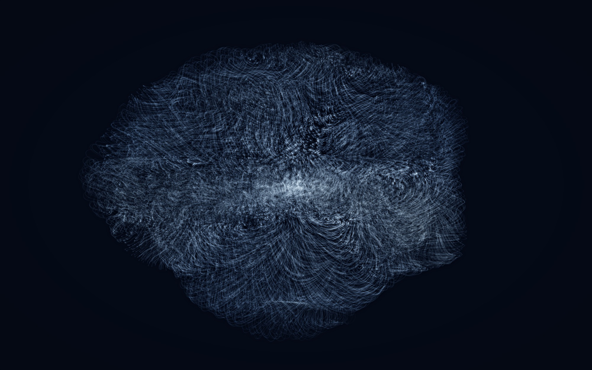
Wind as wave. The movement is a single breathing swell of soft sea-light. Every grain lives on its own ray from a dense core, so the mass is solid at its heart and breaks into spray at the rim; lobes of foam slowly gather and collapse around the circumference while the whole body draws in and surges out along its radii, turning almost imperceptibly, the way a long ocean swell rises and settles without ever leaving the frame. The palette is the coldest in the series, a graded sea blue that runs from a pale, almost white foam at the lit crests to a deep marine blue in the troughs, laid down grain by grain at very low opacity so that density alone builds the light, in the manner of a volumetric render rather than a drawn line. The lit crests carry a faint pearl sheen, the brightest ridges picked out and screened back over the body so the water reads as luminous matter rather than flat fog. Because each grain belongs to a ray, no touch can scatter the swell for long: the tide always gathers it home. The movement draws on the breathing volumetric water studies of the TouchDesigner community, in which a blue mass endlessly surges, breaks and reforms, and it expresses the calmest possible answer to a touch, which is to absorb it and return to rest.
How to playMove through the swell and the spray stirs and scatters around the hand; hold still and the drifting water closes over the path; a pinch blooms the whole mass outward in a slow surge that folds back into itself.
Experience Wave ↑ Installation version — powder particles, sound + camera hand tracking ↗
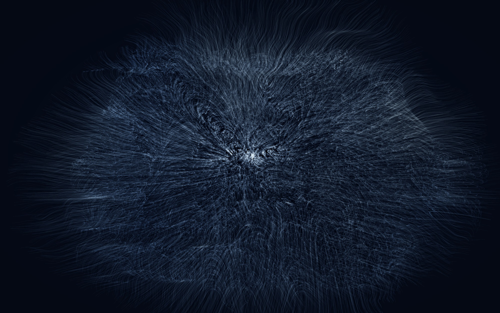
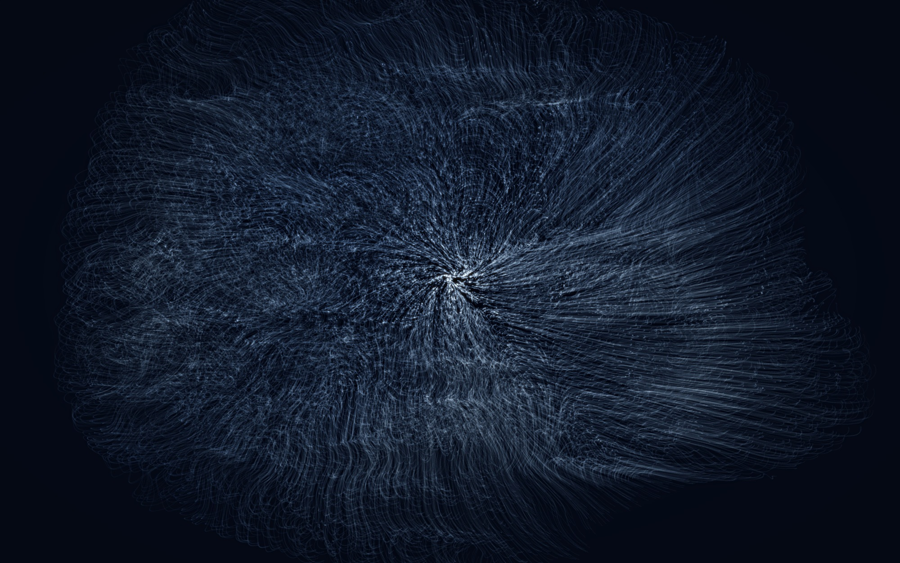
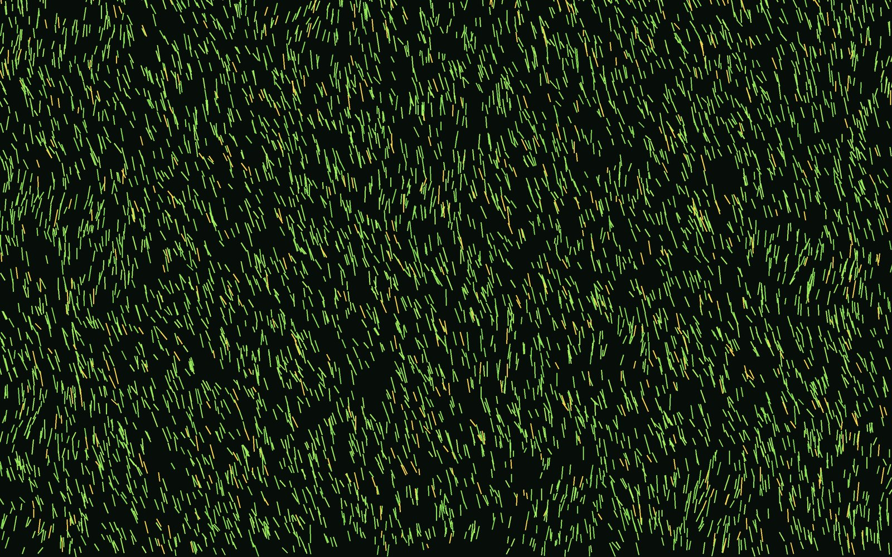
Here the particles are rooted. Thousands of blades cannot fly away, so the wind can only bend them: a gesture crossing the meadow leaves a brightened swath where every blade bows along the path and springs back, one after another, so the wave keeps travelling after the hand has gone. Colour carries the same rule of energy as the rest of the series, but on a warm green register. Each blade holds a saturated field green that lightens toward the tip as it bows, brightening along the swept path so the wake reads as light as much as motion; through the green a scattered few blades, roughly one in ten, burn a golden yellow, so the meadow is never a flat colour but a green shot through with gold. Above, the interactive field at rest, exactly as a visitor first meets it; below, offline studies that render the same meadow in perspective, distant blades crowding dark toward the treeline and near ones rising into the light. The palette borrows the saturated pop greens and scattered gold of Yayoi Kusama, carried by blades rather than her dots, and the movement expresses obedience with memory: a material that yields to every touch and forgets none of its roots.
How to playSweep the hand and a wake of bowing grass streams downwind along the path, like a gust crossing a meadow; a pinch flattens a circle of meadow that recovers blade by blade; holding still lets the whole field sway to the ambient breeze.
Experience Grass ↑ Installation version — sound + camera hand tracking ↗
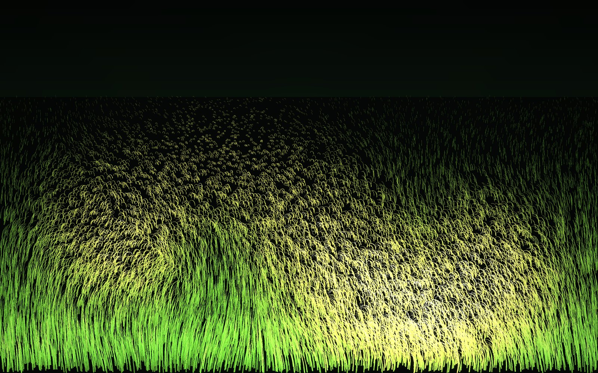
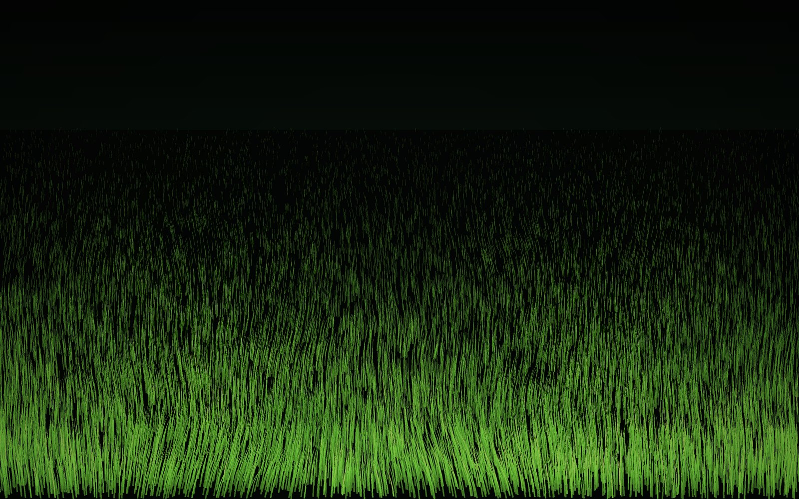
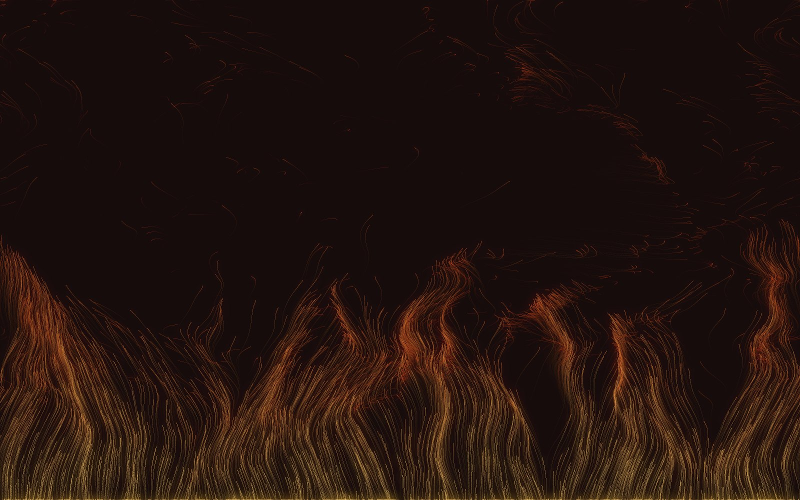
Wind as fire. A burning bed runs the full width of the frame, and from it crimson tongues are continually born: each rises on its own heat, curls in the turbulence, cools from a yellow-orange core to deep ember red, dies, and is reborn at the base. Colour is mapped to heat and speed together. A young, fast tongue burns near white-gold at its tip, falls through orange as it climbs, and settles into a dark crimson before it fails, so the blaze is a continuous gradient from pale gold at the living edge to blood red in the spent smoke, all read against a near-black ground that lets the light carry. The fire is a fountain rather than a texture, tendrils licking upward into the black, and it can never burn itself out: however hard the hand stirs it, new flames keep rising from below, and no tongue ever falls, since the fire knows only one direction. The movement draws on the crimson GPU-particle experiments of the TouchDesigner community, and expresses the moment a gust feeds a blaze rather than blowing it out.
How to playMove the hand and the flames bend and race after it; a pinch detonates an explosion of sparks that leap upward and fall back into the blaze; with sound on, the fire roars with the gesture and crackles underneath.
Experience Fire ↑ Installation version — sound + camera hand tracking ↗
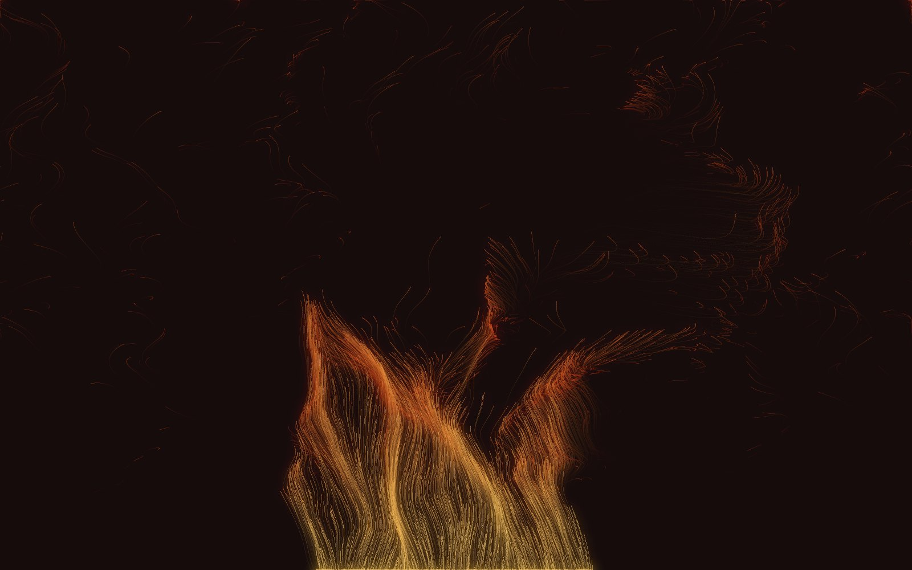
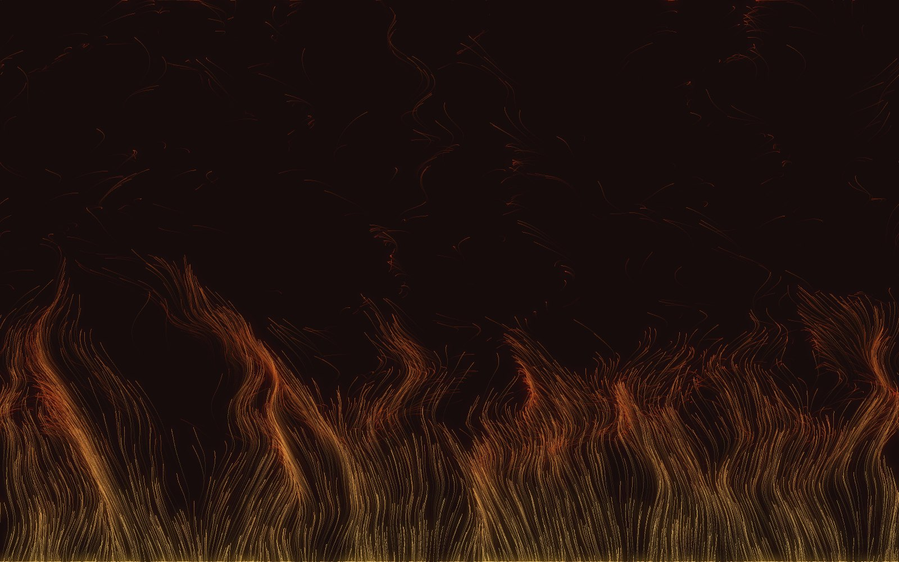
The engine behind every movement was built in seven stages, with the Feather movement as the proving ground; each stage produced a running sketch, so progress stayed visible throughout.
A full-window canvas veiled each frame by a translucent rectangle, so that motion leaves fading streaks.
A Particle class holding position and velocity, instantiated 2,600 times into an array.
Perlin noise sampled at each particle's position becomes a steering angle; drag and a speed limit keep the system stable.
The pointer's frame-to-frame displacement is measured as a velocity vector: the wind is the movement of the hand, not its position.
Each nearby particle receives the gesture vector scaled by a Gaussian falloff, rotated and re-scaled by further Gaussian draws.
Speed mapped to a blue-to-white gradient, so energy becomes luminosity.
Edge wrapping keeps the field full; a tap detonates a radial Gaussian gust; touch handlers suppress page scrolling on mobile.
The work developed through three versions over the summer of 2026, each adding one sensory channel: first sight, then print, then sound and the body.
The core system: 2,600 particles, a Perlin flow field, and pointer velocity injected with Gaussian falloff and Gaussian scatter. The main problem solved here was stability. Early builds accumulated energy until the screen dissolved into noise; the cure was air resistance (velocity multiplied by 0.955 each frame) together with a hard speed limit. The second discovery was that wind must be the movement of the hand, not its position: switching from position to frame-to-frame velocity made the piece feel physical.
A browser canvas cannot be printed at exhibition quality, so the identical algorithm was rewritten offline (Python, vectorised over all particles at once) and run at A3 resolution with a scripted S-curve gesture standing in for the hand. Thousands of translucent trail segments were composited, then a blurred bright pass was screened on top for glow. The first renders came out almost black; the fix was a slower trail fade, higher per-particle opacity, and a gamma lift that brightens mid-tones while preserving the blacks. These renders became the poster and the stills above.
Two channels were added. The wind is now audible: looped white noise passes through a bandpass filter into a gain node (Web Audio API), and gesture energy raises both volume and filter frequency, so fast movement literally howls; a slow Perlin wobble makes the sound gust even when the hand is steady. Browsers refuse to autoplay audio, so the synthesiser is built only inside a user click on the sound button. The hand itself then replaced the mouse: MediaPipe Hands tracks 21 landmarks through the webcam, the index fingertip becomes the wind source (mirrored horizontally so movement feels natural, smoothed with interpolation to remove jitter), and a pinch of thumb against index fires a Gaussian burst. The mouse remains as a fallback whenever no hand is in view.
Testing with viewers exposed three weaknesses. The opening screen was mostly black, so the simulation is now pre-warmed for 130 frames before the first visible one: the audience meets a field already full of drifting wind, in the manner of the resting-field study. The pinch gust was too subtle and failed when the hand stood far from the camera; pinch distance is now measured relative to palm length rather than in absolute units, and both hands are tracked simultaneously. An early revision announced each burst with an expanding ring, but the overlay graphic broke the visual language of the piece; the ring was removed and the pinch now launches a travelling wind source instead, which sweeps across the canvas for about a second in the direction of the hand's movement, combing the particles into the long feathered streaks of the print renders. Everything visible remains pure particle motion. Finally, a small preview window now shows the webcam image with the detected hand skeleton drawn over it, so viewers understand at once that the camera sees them.
Once the first movement was stable, the question changed from "how does wind look" to "what else can this wind touch". Four further movements were prototyped by re-tuning the same engine rather than writing new ones: Silk raises particle alignment and cuts the Gaussian scatter to a tenth, so the field organises into threads, dyed rose and lavender by a second noise field after an early all-white version proved too faint to read; Grass anchors each particle to a root and converts pushes into bending, so nothing can leave; Smoke renders only accumulated density with relief shading, after an earlier stroke-based fog read as wisps rather than volume and was retired; Ocean Wave layers a broad swell beneath a fine chop and blooms foam where speed and turbulence coincide, so the material stays restless even with no one present. Each study was first proven in the offline renderer before interactive development, the same order of work as the poster renders.
Two revisions came from looking rather than coding. First, the opening page originally offered only the first movement; the hero now carries a mode bar that switches the live field between all four materials, each with its own physics and palette, so the series can be compared by hand within seconds. Second, the first movement was renamed. It had been called Gaussian Splatter after its mechanism, but the renders never looked like splatter; they looked like feathers drawn through light, and the work now carries the name of what it resembles rather than how it is made: Feather, 触羽. Finally, the three newer movements each received a full installation version with two-hand camera tracking and a sound voice designed for the material, all synthesised live with no recordings: filtered noise becomes a fire's roar, a dry rustle or a surf wash, and each material keeps a resting sound for the calm, from cricket song in the meadow to the slow breathing of the tide. In these versions the camera preview window was deliberately omitted, so the artwork remains the only image on screen.
A later round of looking changed three movements and one rule. Silk, whose threads kept thinning toward the edges, was reborn as Fire: the same engine given an updraft, a hot palette and a recycling rule that returns every escaped ember to the base, after the crimson GPU-particle experiments of the TouchDesigner scene. Smoke was set aside for a breathing volume that grows and collapses on its own cycle, so the interaction happens inside a living mass rather than beside a rising column. The early choppy sea was recast as a cold fluid in blue, cyan and pale violet, with a storm gust on the pinch. The shared rule that emerged: the material must cover the whole frame at rest and must never be emptied by interaction, since recycling, breathing or a centre pull always brings it back. The grass also learned manners: its response radius was cut to a half, so a passing hand bows a path, not the whole meadow.
The last revision was a subtraction. The powder engine built for the sea, a breathing mass of one-pixel grains, made a better single movement than the two water pieces it grew from, and its surge-and-break cycle plainly belonged to water. The choppy sea and the earlier volume were retired into it, the movement took the name it had always resembled, 浪, Wave, and the series settled at four movements: feather, fire, grass and wave. The powder was refined for the role: finer grains, a looser spring and a slow broad current so the whole body drifts and billows like a swell, and the sound traded its old wash for a breathing tide that inhales and exhales with the mass.
Lessons that carried through every version: change one number at a time; every visual parameter is also an emotional parameter; the best behaviour of the system, the rebellious outlier particles, was originally a bug that was kept; and an interactive work is not finished until strangers have tried to break it.